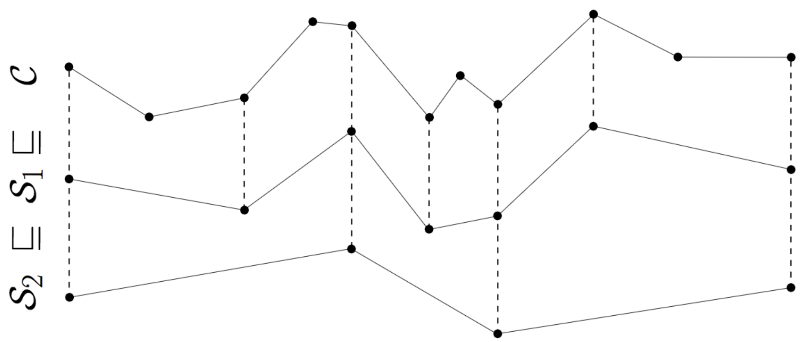

This page is a survey of past and ongoing research projects. I favored to summarize them in simple English, making our research as accessible as possible.
Progressive Simplification of Polygonal Curves
State-of-the-art map services make use of multiple zoom levels. We developed a simplification algorithm
that outputs a series of simplifications across multiple spatial scales. To this end, we developed new construction techniques that boost the computations for any simplification algorithm employing shortcut graphs.
We applied our algorithm to migratory trajectory of a vulture and evaluated various simplification algorithms experimentally.

We implemented a visual analytics tool which exploits migration patterns in gull data. Migration is the spatial displacement of moving objects during seasons, such as winter and spring. We compute and visualize a trajectory aggregation (1), a density
map (2) on top of geographical maps, a calendar view (3) and a list of gulls (4). Our evaluation with an expert user in ecology shows that our approach helps ecologists in identify interesting moving objects.
Lower Bounds on Fréchet Distance and Simplification
We have proven lower bounds for two curve problems. A lower bound of a computational problem help researchers in theory and practice to understand limits of exact computations and to get insights whether approximation algorithms can be designed easily.
We showed that we cannot compute an optimal simplification in subquadratic time and that we cannot compute the Fréchet distance for k curves in less than O(n^k) time. We assume for both results that the Strong Exponential Time Hypothesis (SETH) holds.
We developed a visual analytics approach to analyze and visualize interaction events between two (and three) trajectories. Interaction is the interdependence between two moving objects. We were interested in action-reaction patterns where one trajectory
is reacting after a delay in time. We applied and evaluated our approach on pigeon data ultimate frisbee data.
We studied the problem of computing a spanning tree that minimizes crossings with lines in the plane. The problem of finding a spanning tree with minimal crossing number is NP-hard. We conducted an experimental evaluation of various algorithms and approximations
in form of linear programs.